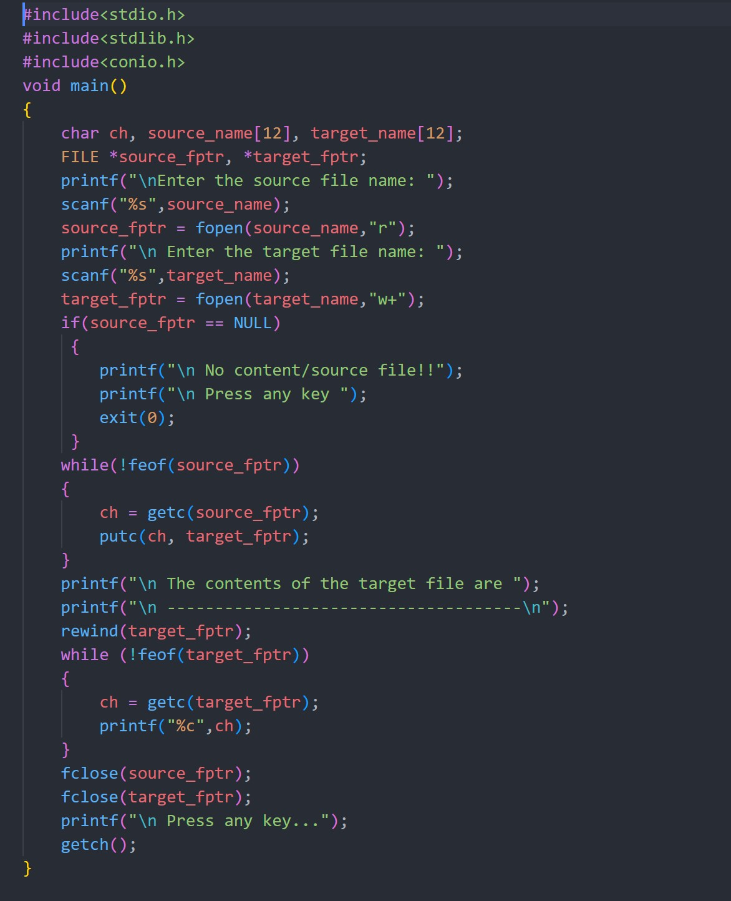
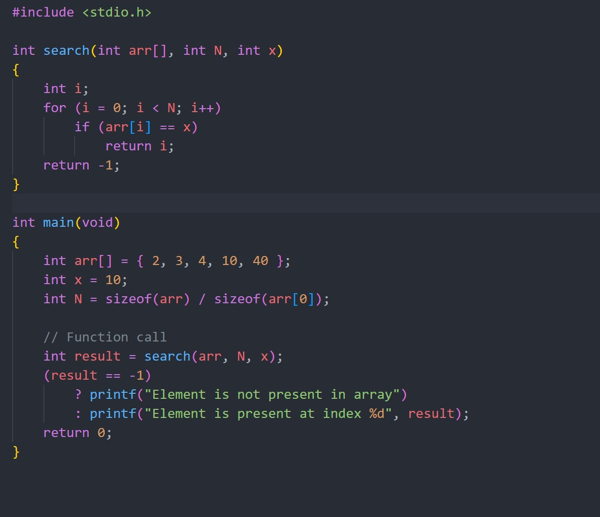
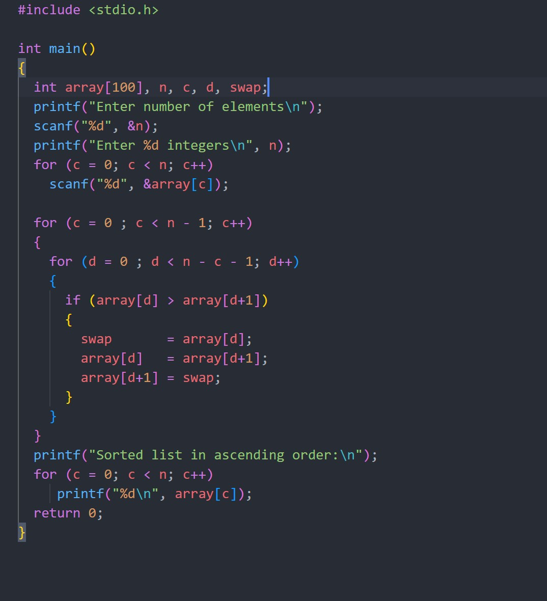
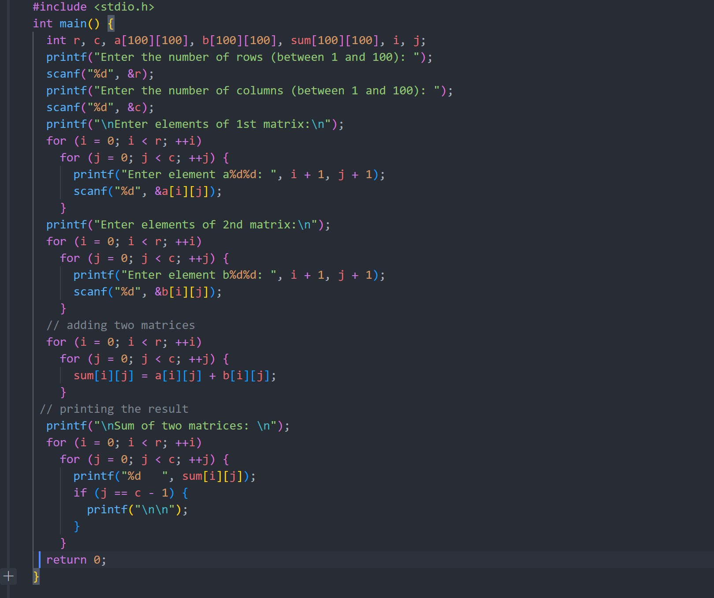
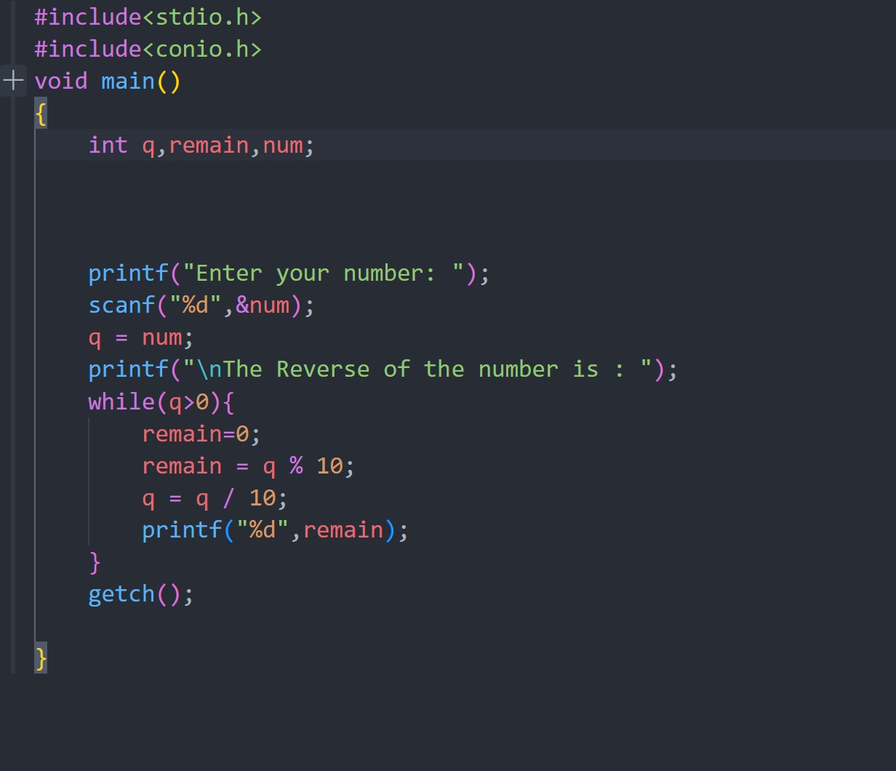

C Programming 2015 Solved paper.
Q. Define Computer? What are the major components of a computer?
Ans. An electronic device for storing and processing data, typically in binary form according to instructions
given to it in a variable program.
Major components of a computer are:
- Motherboard
- CPU(Central Processing Unit)
- GPU(Graphics Processing Unit)
- RAM(Random Acess Memory)
- Storage: Solid State Drive(SSD) or Hard disk drive(HDD)
Q. Define Bootstrapping?
Ans. In computer science, bootstrapping is a technique for producing a self-compiler that is a compiler written in the source programming languages that it intends to compile.
Q. What do you means by algorithm? Why it is important?
Ans. An alorithm is a well structured computational procedure that takes some values as input some values as
output.
Importance of Algorithms- Alogorithm give us the most ideal option of accomplishing a task.
Q. Define Number System? What are ASCII and EBCDIC?
Ans. Number Systems are the technique to represent numbers in the computer system architecture every value that
you are saving or getting into/from computer memory has a defined number system.
ASCII is an encoding that asigns numerical value to each letter in the alphabet.
EBCDIC is an encoding that designed for IBM mainframe computers.
Q. What are keywords and identifiers? Explain with proper examples?
Ans. Identifier: An identifier is a name having a few letters and special character_(underscore). It can be used
to identify a variable, function, symbolic constant and so on.
Example: int student, float marks. Here student and marks are identifiers.We have to remember that
identifier name should be diiferent from keywords.
Keyword: Keywords are predefined reserved words used in programming that have special meanings to the compiler.
Examples: auto , double, int, float etc.
Q. Define L value?
Ans. L-Value refers to memory location which identifies an object. L-Value often represent as identifier.
Q. What are arithmetic and logical operators? Give example of some binary and unary operator.
Ans. Arithmetic Operator: Arithmetic operator are used to perform arithmetic operation.
Example: +, -, *, /, % .
Logical Operator: Logical Operator are used to connect more relational operation to form a complex operation
called logical expression.
Example: &&(and), ||(or) , !(not).
Examples of binary operator: +, -, *, / etc ( binary operator is an operator that operates on two operands and
manipulates them to return a result.)
Examples of unary operator: +28(it is simply a number 28), -5(it is negative number 5) (when only one operand is
used with + or - operator, the operation is called unary plus and actually refer to addition or subtraction.)
Q. Define array. How do we declare an array? Give example.
Ans. An array is a group of variables of similar datatypes refered to by a single element. Its elements are stored
in a contiguous memory location.
Array decalration: Array are declared using type declaration statements with a maximum number of values
accomodated in them.
Example: int x[50], a[3][4];
This statement declares an one dimensional array x having 50 elements and a two dimensional array with 12
elements (3 rows 4 columns). An element means storage location in an array.
Q. Define structure? Give example?
Ans. A structure is a user defined compound data type which consist of data members related to a person or an
item.
struct tag-name
{
type data_member 1;
type data_member 2;
}
Example:
struct student
{
int rollno;
char sname[30];
int total;
};
Q. Define functions. What are the roles of printf() and scanf() functions. Define format conversions.
Ans. Functions are subprograms which are to used to compute a value or perform a task. They are cannot run
independently and are always callled by the main() program or by other program.
printf() function: printf() function is used to print/display values of variables using the standard output
device.
scanf() function: scanf() function is used to read/input values of variables using the standard input device(Keyboard).
Q. Define a pointer. How it is declared?
Ans. A pointer is a variable like name which points or represent storage location in memory(RAM).
A pointer is declared like a variable with appropriate datatype. The pointer variable in the
declaration is preceded by the *(asterisk) symbol. It has the following form
type *v1, *v2.....*vn
Q. Define looping.
Ans. Loop control structures are used to execute and repeat a block of statement depending on the value of the condition.
Q. What is the main difference between do while loop and while loop? Expalin with example.
| for loop | while loop | do-while loop |
|---|---|---|
| A for loop is used to execute and repeat a statement block depending on a condtion which is evaluated at the beginning of the loop. | A while loop is used to execute and repeat a statement block depending on a condition which is evaluated at the beginning of the loop. | A do-While loop is used to execute and repeat a statement block depending on a condition which is evaulated at the end of the loop. |
| A variable value is initialized at the beginning of the loop and is used in the condition. | A variable value is initialized at the beginning or before the loop and is used in the condition. | A variable value is initialized before the loop or assigned inside the loop and is used in the condition. |
| A statement to change the value of the condtion or to increment the value of the variable is given at the beginning of the loop. | A statement to change the condition or to increment of the variable is given inside the loop. | A statement to change the value of the condtion or to increment the value of the variable is given inside the loop. |
| The statement block will not be executed when the value of the condition is false. | The statement block will not be executed when the value of the condition is false. | The statement block will be executed once even if the condition is false. |
| A for loop is commonly used by many programmers. | A while loop is also commonly used by many programmers. | A do-while loop is used in some cases where some condition need to be checked at the end of the loop. |
Q. What are automatic and external storage classes?
Ans. auto: This is the default storage class for all the variables declared inside a function or a block. Hence,
the keyword auto is rarely used while writing programs in C language. Auto variables can be only accessed within
the block/function they have been declared and not outside them (which defines their scope). Of course, these can
be accessed within nested blocks within the parent block/function in which the auto variable was declared.
However, they can be accessed outside their scope as well using the concept of pointers given here by pointing to
the very exact memory location where the variables reside. They are assigned a garbage value by default whenever
they are declared.
extern: Extern storage class simply tells us that the variable is defined elsewhere and not within the same block where it is used. Basically, the value is assigned to it in a different block and this can be overwritten/changed in a different block as well. So an extern variable is nothing but a global variable initialized with a legal value where it is declared in order to be used elsewhere. It can be accessed within any function/block. Also, a normal global variable can be made extern as well by placing the ‘extern’ keyword before its declaration/definition in any function/block. This basically signifies that we are not initializing a new variable but instead we are using/accessing the global variable only. The main purpose of using extern variables is that they can be accessed between two different files which are part of a large program.
Q. Define Compliler & Assembler?
Ans. A compiler is system software (a set of a computer program) that converts source code written in a programming language (source language, usually HLL) into another computer language (target language). It processes every statement written in a particular programming language and turns them to machine language.
An assembler is a type of computer program that interprets software programs written in assembly language into machine language, code and instructions that can be executed by a computer.
Q. Convert the following
- (223.82)10 to octal.
- (18.32)8to Hexadecimal.
Ans.
- (223.82)10 to octal=337.64
- (18.32)8to Hexadecimal.
Q. Write a program in C to find smallest number among three numbers.
#include
#include
void main()
{
int a, b, c, big;
printf("\nEnter the first number: ");
scanf("%d",&a);
printf("\nEnter the second number: ");
scanf("%d",&b);
printf("\nEnter the third number: ");
scanf("%d",&c);
big = a;
if(big< b)
{
big = b;
}
else
{
if(big< c)
big = c;
}
printf("\n---------------------------");
printf("\n The biggest number is : %d",big);
getch();
}
Q. Define string? How it is stored in C?
Ans. A string is a data type used in programming, such as an integer and floating point unit, but is used to represent text rather than numbers. It is comprised of a set of characters that can also contain spaces and numbers.
In C strings are stored as an array of characters terminated by a null character
Q. What are associativity? Explain the operator precedence?
Ans. An operation on a set of elements giving an equivalent expression when elements are grouped without change of order.
Operator precedence determines the grouping of terms in an expression and decides how an expression is evaluated. Certain operators have higher precedence than others; for example, the multiplication operator has a higher precedence than the addition operator.
For example, x = 7 + 3 * 2; here, x is assigned 13, not 20 because operator * has a higher precedence than +, so it first gets multiplied with 3*2 and then adds into 7.

Q. Distinguish between call by reference and call by values?
| Call By Values | Call By Reference |
|---|---|
| While calling a function, we pass values of variables to it. Such functions are known as “Call By Values”. | While calling a function, instead of passing the values of variables, we pass address of variables(location of variables) to the function known as “Call By References. |
| In this method, the value of each variable in calling function is copied into corresponding dummy variables of the called function. | In this method, the address of actual variables in the calling function are copied into the dummy variables of the called function. |
| With this method, the changes made to the dummy variables in the called function have no effect on the values of actual variables in the calling function. | With this method, using addresses we would have an access to the actual variables and hence we would be able to manipulate them. |
Q. What is an User defined function?
Ans. A function is a block of code that performs a specific task.
C allows you to define functions according to your need.
These functions are known as user-defined functions.
Q. Write a C program to copy the content of one text file to another?

Q. Write a program to implement linear search algorithm?

Q. Write a progarm to sort elemens using bubble sorting?

Q. Write a program to add two matrices?

Q. Write a program to reverse two number?
